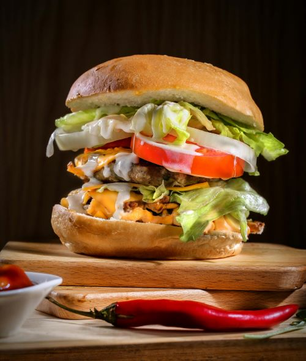

Implement responsive design for seamless viewing on all devices, create an interactive pricing grid to display various tiers, customize elements for easy adjustment, include hover effects to highlight key features, and integrate clear call-to-action buttons for effortless selection and purchase.
Technologies: HTML5, CSS3, JS, Responsive Web design.
Restaurant Website

Spearheaded development of captivating food restaurant website.Demonstrated expertise in crafting immersive digital experiences.
Leveraged proficiency in HTML, CSS, and JavaScript for optimal performance.Enabled effortless visitor engagement including menu exploration and reservations.
Highlights technical prowess and commitment to exceptional results.
Alumini management
Streamlined alumni database organization and management.Developed user-friendly interface for alumni to update information and connect.
Implemented secure authentication system for data privacy.Integrated communication features for alumni networking and events coordination.
Customized reporting tools for tracking alumni engagement and contributions.
Fylo Dark Theme based To-Do App
Created To-Do list using dark theme.Technologies: I used HTML, CSS, JS and Responsive Design .